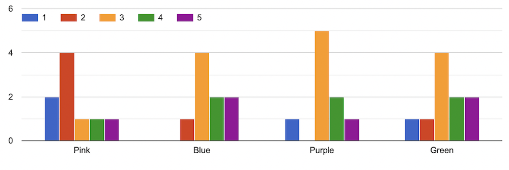

The research in color theory about the relationship between colors and
human emotions is old. Researchers only recently began investigating
this complex relationship in the context of digital media. The purpose
of this study is not to make a statistical claim for the general human
population but rather for individuals who participated in this study.
This study investigates what color scheme variant the participants
found the most calming on a web page. The color schemes used for this
study are pink, blue, purple, and green variants of the same web page.
Our study found that participants rated green and blue as the most
calming color schemes. A larger pool of participants is needed to
confirm the hypotheses.
Introduction
This mock research project aims to determine which color scheme on a
web page is the most calming. In recent decades, color psychology has
been a growing field of research. According to the academic paper by
Andrew J Elliot, the research in color psychology can be traced back
to researcher Goethe in 1810, who associated colors with emotional
responses. In 1942, researcher Bob Goldstein expanded the ideas by
postulating that certain colors elicited specific emotional reactions.
Goldstein also posited that shorter wavelength colors feel relaxing
while longer wavelengths feel warm and arousing. In 2012 Elliot and
Maier synthesized color-in-context theory, which postulates that
people associate colors with particular concepts and experiences. An
example of this theory is how people pair the color blue on a ribbon
as positive while blue on meat as negative (Elliot, 2015).
Various articles recite studies that have found colors invoking a
specific emotional response. According to a HubSpot article written by
Bethany Cartwright. “If you’re looking to create a feeling of peace or
tranquility, trend toward lighter blues and greens” (Cartwright,
2022). An article from Platt College also mentions how green, blue,
and even purple are calming colors. (Englehardt, 2016). Hale states,
“navy blue, closely followed by teal-like turquoise, and soft pastel
pink” (Hale, 2019).
However, more research needs to be done on the impact of colors in
Internet-based environments, with only a few researchers conducting
studies on this topic in recent years (e.g. Bonnardel et al., 2011).
They decided to research whether website users and designers found the
same color scheme appealing. Researchers developed 23 homepage
variants in which users had to indicate how much they liked the
webpage on a scale of 1-7, 7 being liked the most and 1 not at all.
The researchers found that “the professional designers appeared to be
more critical of the Webpages than the users. However, blue and orange
were regarded as the most appealing colors by all participants.
Website designers also liked (or at least did not dis- like) grey,
unlike the users” (Bonnardel et al., 2011).
This is similar to Bonnardel’s research, but instead of investigating
what colors website users and developers prefer, this project investigates what
color scheme is the calmest and focuses primarily on website users. This
study only uses four different colors for simplicity and time. Due to
the results from the University of Sussex and G F Smith's survey, the
hypothesis proposed is that the participants will rate the color blue to be the
most calming.
Procedure
In order to identify what color feels the most calming, four variants
of the same webpage were developed using a code editing software known
as Visual Studio Code. A monochromatic color scheme for all four
variants of the experimental web pages was chosen to cancel out
confounding variables. HTML and CSS were used to build the website for
this study. These experimental web page variants are the home page for
a fictional AI art generator company, Happy Art, that has been
synthesized for this project. Each experimental web page has two
shades of the same color to differentiate the navigation bar from the
body of the experimental web pages. The navigation bar of the
experimental web pages has a darker shade than the body. Happy Art is
intended to allow participants to select six themes for the AI to
generate an artwork specific to the theme the participants have
selected. The theme selector does not generate artwork but directs
participants to the last section of the web page. This section
contains a big red button, which, when clicked, redirects users to
the main home page of the research project. Once the participants have
visited all the web pages, they click the yellow link from the
main home page, leading them to the google survey. They rate
each experimental web page using a 5-point Likert scale (1 being the
least calm and 5 being the calmest). After filling out the google
survey, the participants completed the required tasks for this mock
research project.
Results

Figure 1 results from the study
The y-axis of figure one represents the number of participants, and
the x-axis represents the four color schemes used for this study.
Based on the survey, users rated green and blue as the most calming
web page color schemes. Two participants rated green and blue as 5,
and one rated pink as 5. One person rated pink as 4, and three
participants rated blue, purple, and green as 4. One rated pink as 3,
and four participants rated blue and green as 4. Five participants
rated purple as 3, and one rated blue and green as 2. In contrast,
four participants rated pink as 2, and one rated purple as 2. Nobody
rated blue as 1, while one person rated purple and green as 1. Two
people ranked pink as 1. Four participants rated pink as 2, and two
ranked pink as 4, suggesting that participants generally found pink to
be the least calming color scheme. Purple got the most consistent
rating of 3 from five participants, suggesting purple has an average
calming effect on the participants.
Discussion/Conclusion
The outcome of this project shows that participants found both the
green and blue color schemes to be the calmest. This finding is
similar to other findings, which suggest that light blue and green
colors tend to be calming. It was not surprising that participants
rated the pink color scheme as the least calming since the color was
bright as opposed to pastel pink.
A few things could be improved for this project. The number of
participants was too small to make a statistical claim, so future
studies would need a more significant number of participants. A random
sampling method for this research project was not used. Further
testing would be recommended to improve this study's results' accuracy
and depth.
References
Bonnardel, N., Piolat, A., & Le Bigot, L. (2011). The impact of
colour on website appeal and users’ cognitive processes. Displays,
32(2), 69–80. https://doi.org/10.1016/j.displa.2010.12.002
Cartwright, B. (2022, November 25). Color theory 101: A complete guide
to color wheels & color schemes. HubSpot Blog. Retrieved December
28, 2022, from https://blog.hubspot.com/marketing/color-theory-design
Elliot, A. J. (2015, April 2). Color and psychological functioning: A
review of theoretical and empirical work. Frontiers in psychology.
Retrieved December 28, 2022, from
https://www.ncbi.nlm.nih.gov/pmc/articles/PMC4383146/
Englehardt, N. (2016, October 7). The psychology of color and graphic
design. Platt College San Diego. Retrieved December 28, 2022, from
https://platt.edu/blog/psychology-color-graphic-design/
Hale, T. (2019, April 11). What is the world's most relaxing color? A
new survey just found out. IFLScience. Retrieved December 28, 2022,
from
https://www.iflscience.com/what-is-the-worlds-most-relaxing-color-a-new-survey-just-found-out-52108